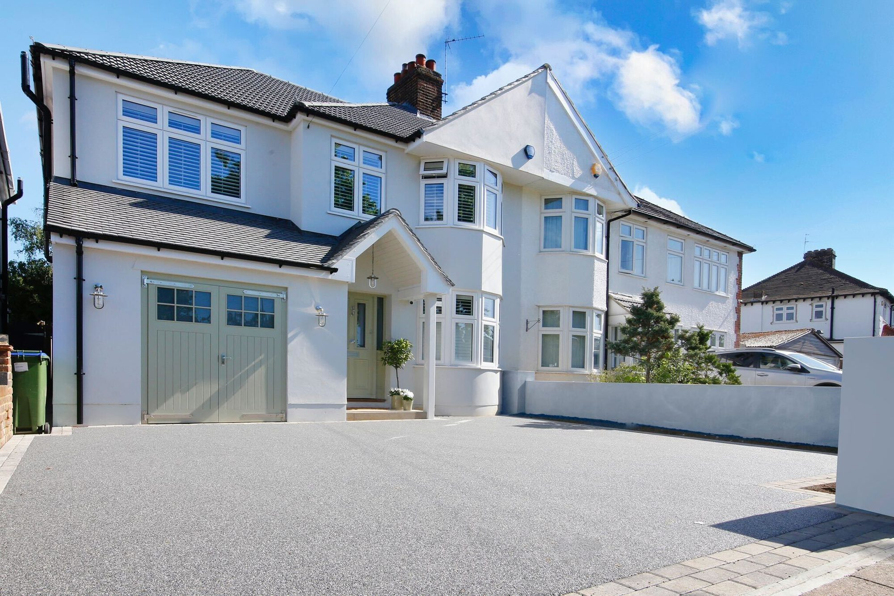
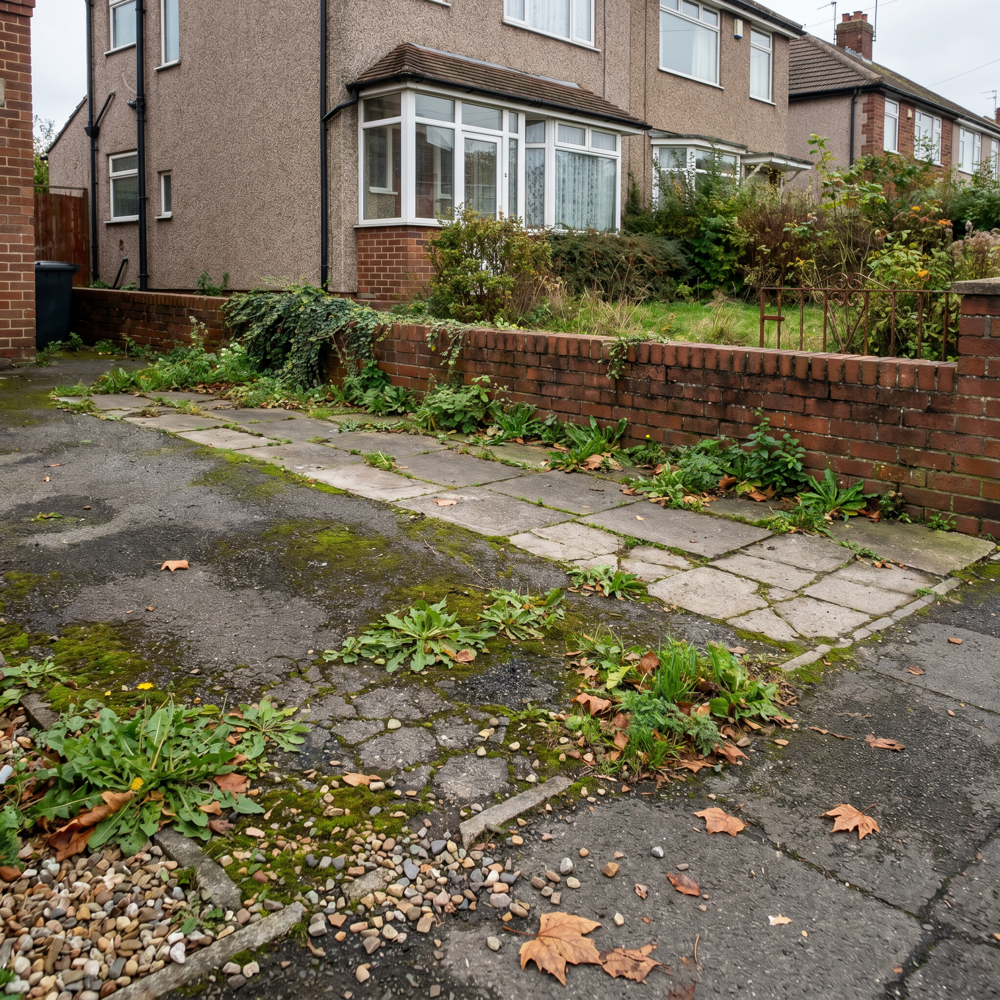
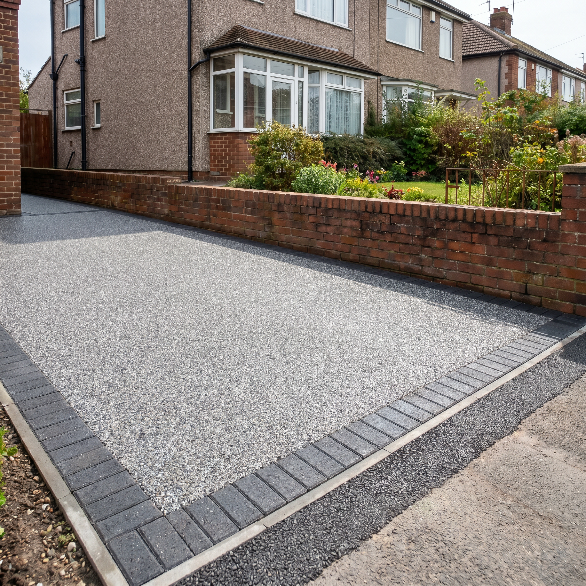

1. Free survey & visualisation
We visit your property, capture every measurement digitally and create a free visualisation mock-up so you can see the finish before we start.

Our Core Service • Cheshire & North Wales
★★★★★ 5/5 on Google · Approved Vuba Installer · 25-year Vuba guarantee

Resin Bound Driveways
A resin bound driveway is one of the best investments you can make in your property. Unlike loose gravel or ageing tarmac, a resin bound surface is smooth, permeable and built to last — blending natural stone aggregates with a clear UV-stable resin to create a stunning, hard-wearing finish.
Water drains straight through the surface, so you won’t need planning permission in most cases. No puddles, no surface water, no drainage issues.
Every installation is registered with Vuba, who provide a 25-year guarantee directly. Your investment is protected by the manufacturer, not just our word.
From modern greys like Poseidon and Manhattan, to warm creams and golden tones — pick from over 100 natural stone blends with coloured borders and contrast edging options.
The smooth, bound finish means weeds can’t take root like they do in block paving or gravel. A quick jet wash once a year keeps it looking brand new.
Vuba resin is engineered to handle the British climate. It won’t crack in frost or fade in sunlight — your driveway stays looking fresh year after year.
We’re a Vuba-approved installer using only genuine Vuba materials. Every job is done to manufacturer spec, not cut corners.
How It Works
We keep the process simple and stress-free. Here’s what to expect when you book a resin bound driveway with ResinPro Cheshire.
We visit your property, capture every measurement digitally and create a free visualisation mock-up so you can see the finish before we start.
We prepare the sub-base to ensure proper drainage and structural integrity. This might involve excavation, levelling, or overlaying an existing tarmac or concrete base.
We install your chosen edging — whether that’s brick borders, aluminium edging, or a contrasting resin colour to frame your driveway.
The natural stone aggregate is mixed on-site with Vuba UV-stable resin and hand-trowelled to a smooth, even finish. The surface is fully permeable and cures within 24 hours.
Once complete, we carry out a final inspection and register the installation with Vuba to activate your 25-year guarantee.
We talk you through simple aftercare steps and leave you with a driveway that’ll look incredible for decades to come.
Real Installations
All surfaces shown are genuine resin bound installations — the Vuba colours and finishes we bring to every job across Cheshire.




Areas We Cover
We install resin bound driveways across Cheshire, North Wales and surrounding areas. Browse our local pages for more details.
Client Feedback
★★★★★
I had my driveway done after seeing them complete the British Legion project in Penyffordd. I couldn’t fault them or recommend them enough — it looks amazing!
— Laura Halstead
★★★★★
They upgraded our back garden, front driveway and pathways. The resin quality is brilliant and drains perfectly — no surface water whatsoever. The team were hard working, on time and polite throughout. Can’t recommend them enough!
— Richard Hughes
★★★★★
Fantastic job from start to finish. They helped us choose the right colours, communication was excellent, and they went above and beyond. The driveway looks incredible and really makes a difference to our house.
— Kimberley Ravazzolo
Common Questions
Resin bound is a mix of natural aggregate stones and clear UV-stable resin, trowelled smoothly onto a prepared base. The result is a seamless, permeable, hard-wearing surface with no loose stones.
With proper installation and a solid sub-base, a resin bound driveway will last 25+ years. All our installations carry a 25-year Vuba manufacturer’s guarantee.
Resin bound mixes stones and resin together before laying — creating a smooth, porous surface. Resin bonded spreads resin onto the surface then scatters stones on top — it’s non-porous and can shed loose stones. We only install resin bound for a superior, longer-lasting finish.
In many cases, yes. If your existing concrete or tarmac base is in good condition with no major cracks, we can overlay directly. We assess this during your free survey.
Resin bound is very low maintenance. An occasional jet wash or sweep is all that’s needed. It resists weeds, moss and oil stains far better than block paving or loose gravel.
We offer over 100 Vuba colour blends ranging from natural stone tones to bold contemporary mixes. We’ll bring samples to your survey so you can see them against your property.
Free Visualisation
Send us a photo of your driveway on WhatsApp and we’ll show you exactly what it could look like with resin. Free, no obligation, usually back the same day.

Before
AfterFree, no commitment — usually back with you the same day.
Get your free visualisation →Ready to transform your driveway?
Rapid response, a fixed written price with no hidden add-ons, and a finish that raises your kerb appeal for years.